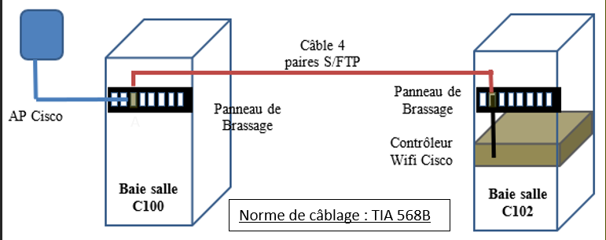
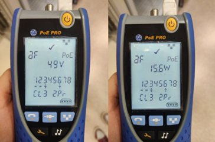
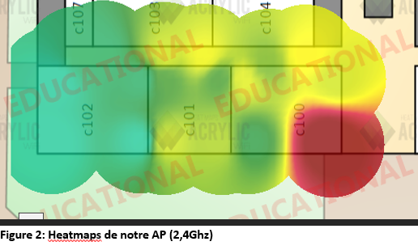
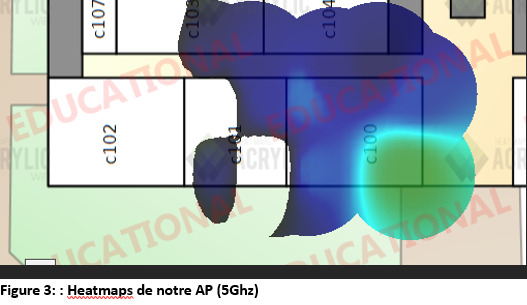
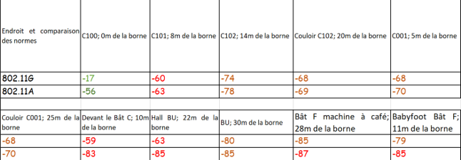
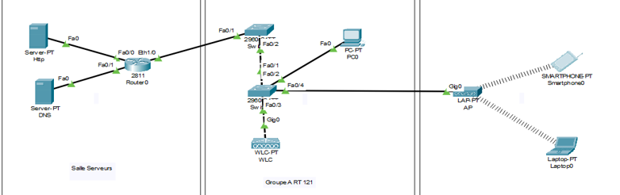
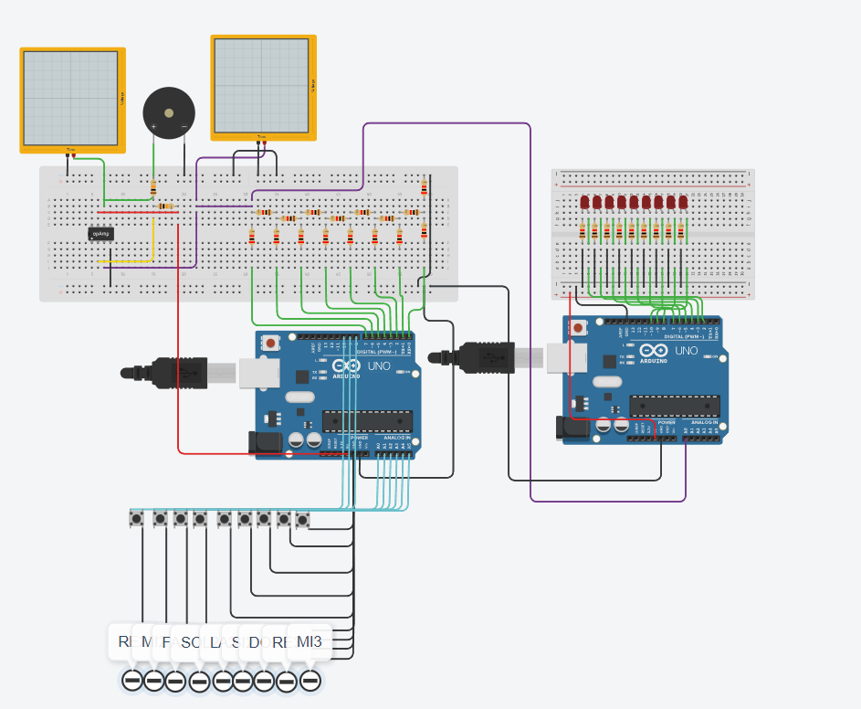

UE x.2 – Connecter les entreprises et les usagers
Découverte et mise en œuvre de dispositifs de transmission, mesures de signaux et caractérisation d’équipements réseau.
SAÉ1.03 – Découvrir un dispositif de transmission
Compétence : Dispositifs de transmission (Wi-Fi)
Description
Étude du câblage, des mesures de puissance PoE, réalisation de heatmaps Wi-Fi, mesures de débit et simulation réseau sous Packet Tracer.
Preuves & traces
- Câblage : RJ-45 S/FTP – norme TIA-568B.

- Mesure PoE : Switch Cisco 2960-24PC-L (370 W tot., 154 W/port).

- Heatmaps : 802.11g (2.4 GHz) vs 802.11a (5 GHz).


- Mesures de débit (SpeedTest / nPerf / JPerf).

- Simulation Packet Tracer : serveur DNS, Web, DHCP, AP Wi-Fi.

Conclusion
Acquis : câblage structuré, mesure PoE, cartographie Wi-Fi, simulation réseau. Importance du travail d’équipe pour la planification des tests et l’analyse des résultats.
SAE2.02 – Mesurer et caractériser un signal ou un système
Compétence : Métrologie des signaux
Description
Acquisition de signaux audio avec Arduino UNO (Tinkercad), analyse FFT pour la reconnaissance de notes, transmission des données.
Preuves & traces
- Simulation Tinkercad – schéma câblage.

Conclusion
Acquis : mesure analogique, FFT sur Arduino, travail en équipe pour intégrer matériel et traitement numérique.
SAE3.01 – Système de transmission
Page en cours de préparation…